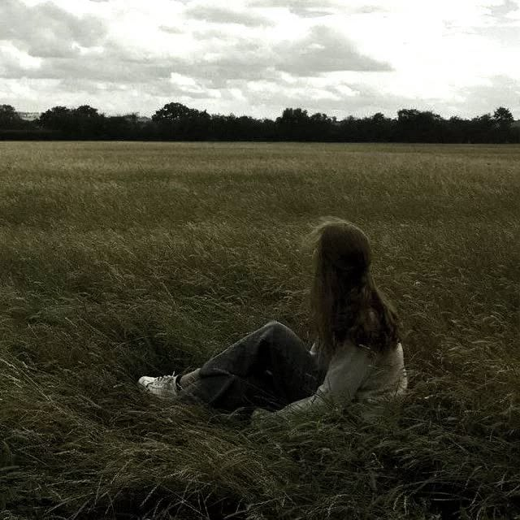
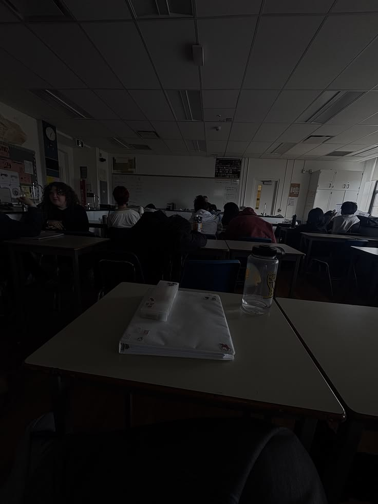

If you hugged me long enough, I'd probably start crying and fall apart into a million pieces.
My parents don't care, school professionals don't care. I don't have any friends.
"But you have many friends", No one would pick me first.

I feel sooo NUMB, UNTHINKING. I feel SO TIRED, SO EMPTY, SO ALONE. I just can't take it anymore. I can't think, I can't speak, I can't move.
I try to sleep, but then my head HURTS, and HURTS, and HURTS ...
I am fighting for my life inside my head, and all my parents see is anger, laziness and attitude.
"It's okay, I like being alone" I say as my eyes start watering, my heart starts burning and clenching and self-doubt and overthinking takes over...
I just wished my parents would listent to me for once without thinking about their image, my grades, and actually care about me. They both have this victim mindset like they're the only ones allowed to be sad, angry, let out emotions and that they have more reasons to. Like I never ever told my father about what's going on with litterally EVERYTHING in my life, because in his eyes, my value and worth is determined by my performance, and he's shown it so many times; and I can't even point it out to him because I'm considered "ungrateful", "disrespectful",etc
Probably needed a hug, but I wiped my own tears and kept moving like I was fine the whole time.
I would be sitting is class, quiet, overthinking, zoned out, fidgeting, getting random frequent anxiety and panic attacks, unintentionally reaching out to play with my jewelery and pens while I'm trying so hard to concentrate and understand in class, and just waiting for the day to be finally over.
I hate how everyone in class seem to understand everything the teacher is saying while I'm struggling to calm my racing thoughts, I hate how everyone is able to work on an exercise, ask for help when I can't lift a pen and don't know what to ask. Especially lately, I just have this extreme deep desire to just change, change the school, change the city, change the country. I don't feel like me here, nobody understands me, and I have litterally no friends so there's no reason to stay here. But I can't.
Loosing my academic spark because of my mental health is the WORST THING EVER. And it happened in my most important school year ever.
